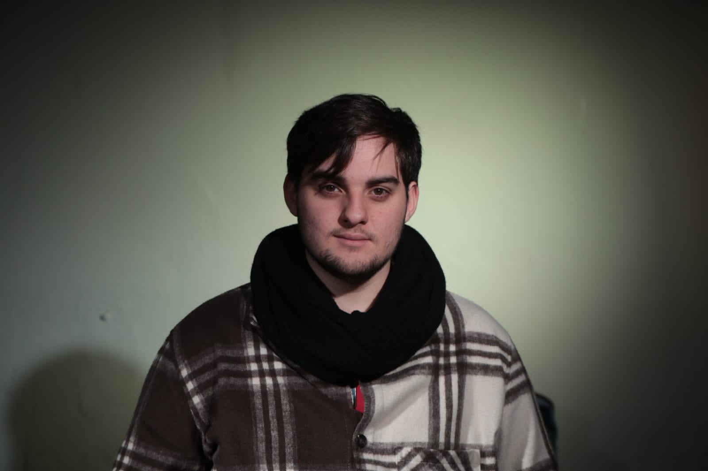

- Inicio
- Contactos
- Nosotros
Conrado es un cineasta apasionado por contar historias a través del lente de la cámara. Con una formación sólida en cinematografía y una visión creativa única, está listo para llevar tus proyectos audiovisuales al siguiente nivel.
Con su experiencia en dirección, producción y edición, Conrado puede ayudarte a dar vida a tus ideas, ya sea para cortometrajes, documentales o proyectos comerciales. Su compromiso con la calidad y la innovación lo convierte en un aliado perfecto para cualquier proyecto cinematográfico.